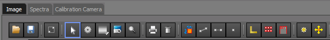
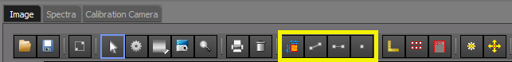

Tools
The graphical tools for selecting the scan region are located on the Image tab of the data visualization pane, the selection tools are dynamically enabled or disabled depending on the currently selected scan.
When a Shape is selected or not
A shape that is displayed on the plot window will initially be in the unselected state, the unselected state color of the shape outline is yellow.
Shape in unselected state, cannot move or resize
If the shape is in the unslected state it cannot be moved or resized, to move or resize a shape you must first select it by left clicking on it, when the shape transitions to the selected state it will turn from yellow to green and handles should appear on the outer corners of the shape, now that the shape is selected you can grab a handle and resize or reposition the shape.
Shape has been selected, can move and resize
Note
If you seem to not be able to select the desired shape this is usually due to multiple items being on the plot window, to resolve this deselect all plot items by left clicking on the background grid of the plot (this says “I want to select nothing”) then with everything now deselected you should be able to click on the plot shape that you want.
Scan Selection Tools
The tools that allow you to select a scan region (2d roi, line or point) are located on the top of the plot window. These tools allow you to graphically select the area that you want to scan, these tools will send information to the currently selected scan plugin and change the center and/or range of the desired scan interactively.